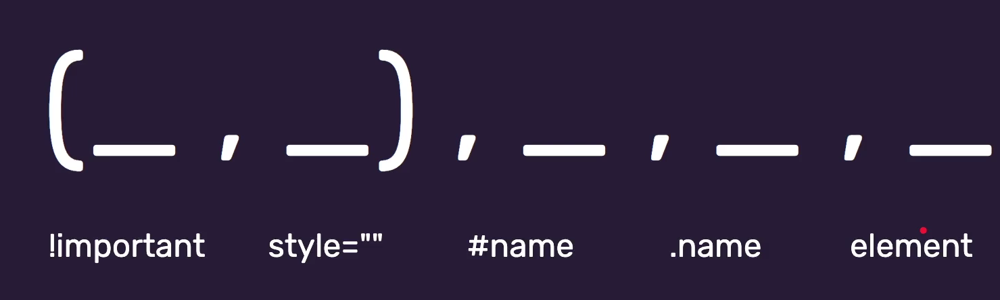

Przydatne linki
FreeCodeCamp: Basic CSS
FreeCodeCamp: Basic CSS

display: block => elementy ustawiają się jedno pod drugim
display: inline => elementy ustawiają się obok siebie
display: inline-block => zachowuje się jak element liniowy (pozwala nadawać dodatkowe własności, które są niedostępne dla własności inline, a które są dostępne dla własności blokowych)
width / height => bez scrolla
max-width / max-height => może pojawić się scroll
min-width / min-height => może pojawić się scroll
overflow: hidden => ucina wszystko co wystaje
overflow: visible
overflow: auto => często dodaje scroll